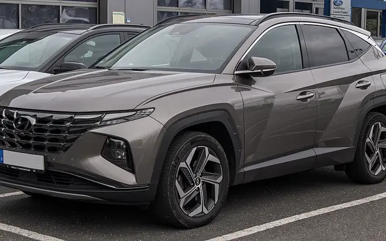

Par Motor › Precios por modelo › Hyundai Tucson
Precio de segunda mano · noviembre de 2026¿Cuánto vale un Hyundai Tucson de segunda mano?

Precio justo estimado de un Hyundai Tucson usado en España, año por año, con los kilómetros normales para su edad y en buen estado: de 5.200 € a 40.100 €. Para tasar el tuyo con sus kilómetros reales y su estado, usa el tasador gratis.
Precios del Hyundai Tucson por año
Tucson I (2004–2010)
Precio de nuevo: 2.0 141 CV, 22.000 € · 2.0 CRDi 140 CV, 24.000 € · 2.7 V6 175 CV, 27.000 €
| Año | Km normales | 2.0 141 CV · Gasolina | 2.0 CRDi 140 CV · Diésel | 2.7 V6 175 CV · Gasolina |
|---|---|---|---|---|
| 2010 | 100.000 km | 7.800 € | 8.300 € | 9.600 € |
| 2009 | 100.000 km | 7.300 € | 7.700 € | 9.000 € |
| 2008 | 100.000 km | 6.800 € | 7.200 € | 8.400 € |
| 2007 | 100.000 km | 6.400 € | 6.700 € | 7.800 € |
| 2006 | 100.000 km | 5.900 € | 6.300 € | 7.300 € |
| 2005 | 100.000 km | 5.500 € | 5.900 € | 6.800 € |
| 2004 | 100.000 km | 5.200 € | 5.500 € | 6.300 € |
ix35 (2010–2015)
Precio de nuevo: 1.6 GDi 135 CV, 22.000 € · 2.0 CRDi 136 CV, 26.000 € · 2.0 CRDi 184 CV, 30.000 €
| Año | Km normales | 1.6 GDi 135 CV · Gasolina | 2.0 CRDi 136 CV · Diésel | 2.0 CRDi 184 CV · Diésel |
|---|---|---|---|---|
| 2015 | 100.000 km | 10.600 € | 12.700 € | 14.700 € |
| 2014 | 100.000 km | 10.300 € | 11.900 € | 13.700 € |
| 2013 | 100.000 km | 9.700 € | 11.100 € | 12.800 € |
| 2012 | 100.000 km | 9.000 € | 10.300 € | 11.900 € |
| 2011 | 100.000 km | 8.400 € | 9.600 € | 11.100 € |
| 2010 | 100.000 km | 7.800 € | 9.000 € | 10.400 € |
Tucson TL (2015–2020)
Precio de nuevo: 1.6 GDi 132 CV, 24.000 € · 1.7 CRDi 141 CV, 27.000 € · 1.6 T-GDi 177 CV, 30.000 €
| Año | Km normales | 1.6 GDi 132 CV · Gasolina | 1.7 CRDi 141 CV · Diésel | 1.6 T-GDi 177 CV · Gasolina |
|---|---|---|---|---|
| 2020 | 95.000 km | 13.500 € | 15.700 € | 16.800 € |
| 2019 | 100.000 km | 12.700 € | 15.500 € | 15.900 € |
| 2018 | 100.000 km | 12.400 € | 15.400 € | 15.500 € |
| 2017 | 100.000 km | 12.100 € | 15.100 € | 15.200 € |
| 2016 | 100.000 km | 11.800 € | 14.200 € | 14.800 € |
| 2015 | 100.000 km | 11.500 € | 13.200 € | 14.400 € |
Tucson NX4 (2020–hoy)
Precio de nuevo: 1.6 T-GDi 150 CV, 31.000 € · 1.6 CRDi 136 CV, 33.000 € · HEV 230 CV, 37.000 €
| Año | Km normales | 1.6 T-GDi 150 CV · Gasolina | 1.6 CRDi 136 CV · Diésel | HEV 230 CV · Híbrido |
|---|---|---|---|---|
| 2026 | 5.000 km | 32.000 € | 32.700 € | 40.100 € |
| 2025 | 20.000 km | 27.400 € | 28.000 € | 34.300 € |
| 2024 | 35.000 km | 25.500 € | 26.100 € | 32.000 € |
| 2023 | 50.000 km | 23.800 € | 24.400 € | 29.900 € |
| 2022 | 65.000 km | 22.200 € | 20.900 € | 27.800 € |
| 2021 | 80.000 km | 19.900 € | 19.300 € | 24.900 € |
| 2020 | 95.000 km | 17.400 € | 19.200 € | 21.800 € |
Kilómetros normales: 15.000 al año en gasolina, híbridos y eléctricos, y 20.000 en diésel, con un máximo de 100.000 km (por encima no tasamos: el precio depende demasiado del historial de cada coche). Cifras redondeadas a 100 €.
Preguntas frecuentes
¿Cuánto vale un Hyundai Tucson de segunda mano?
Según el año, la versión y los kilómetros, un Hyundai Tucson usado vale hoy de 5.200 € a 40.100 € en España. El más barato de nuestra tabla es un 2.0 de 2004 (5.200 €) y el más caro un HEV de 2026 (40.100 €). Son precios justos estimados entre particulares y profesionales, con los kilómetros normales para su edad y en buen estado.
¿Cuánto valor pierde un Hyundai Tucson al año?
Con unos años encima, un Hyundai Tucson pierde alrededor de un 7 % de su valor cada año (calculado sobre el 1.6 T-GDi de la generación Tucson NX4). Los primeros años la caída es mayor y a partir de los 70.000 km se acelera.
¿Qué motorizaciones tiene el Hyundai Tucson?
En nuestra base de datos hay versiones gasolina, diésel, híbrido y híbrido enchufable, en 4 generaciónes: Tucson I, ix35, Tucson TL y Tucson NX4.
¿Cómo sé si me piden demasiado por un Hyundai Tucson?
Abre el tasador de Par Motor, elige el Hyundai Tucson, el año y los kilómetros reales, y escribe lo que te piden. Te diremos si está por debajo del precio justo (chollo) o por encima (caro). Es gratis y no pide registro ni matrícula.
Otros Hyundai
Compara su coste real
El precio de compra es solo una parte. Mira cuánto te costaría al mes con combustible, seguro, neumáticos, mantenimiento y lo que pierde de valor.
Abrir el comparador →